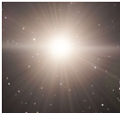
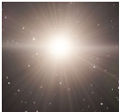
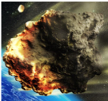
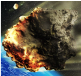

НАСА надхвърля бюджета си
НАСА надхвърля бюджета си и изостава от графика по големите си проекти, съобщава AP, позовавайки се на надзорен орган на Конгреса.
Научи повечеНАСА надхвърля бюджета си и изостава от графика по големите си проекти, съобщава AP, позовавайки се на надзорен орган на Конгреса.
Научи повечеИзстрелването на първия космически кораб Crew Dragon с екипаж към Международната космическа станция (МКС) е насрочено за 15 ноември, предаде БГНЕС.
Научи повечеАстронавтът Майкъл Колинс публикува неизвестна досега снимка на екипа на Аполо 11, докато светът се готви да празнува 50-та годишнина от първото кацане на човек на Луната.
Научи повече
 

 

Екип от учени ще наблюдава мистериозните светкавици на повърхността на луната. „Преходните светлинни лунни явления“ се появяват няколко пъти седмично и осветяват части от пейзажа на Луната за кратък период от време, преди да изчезнат. Понякога се наблюдава обратен ефект, който причинява потъмняване на лунната повърхност.
Научи повечеакето-носител „Союз-2.16“, излетяла днес сутринта от космодрума Плесецк, беше ударена от мълния веднага след старта. Съобщението е на кореспондента на „Звезда“, цитирани от БГНЕС.
Научи повече